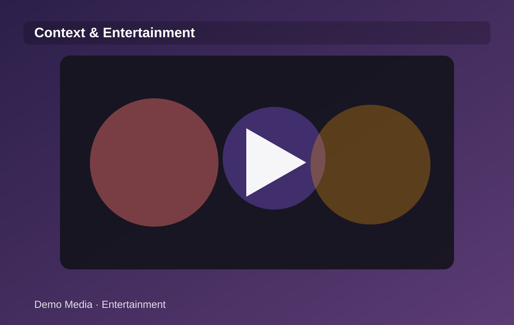

TECNOLOGIA
Publicidade programática entra em uma nova fase de transparência
Publishers redesenham suas estratégias de inventário.
Abrir matéria →Tecnologia publicitária, dados, plataformas e mídia programática.


Publishers redesenham suas estratégias de inventário.
Abrir matéria →
Preferred Deals e Programmatic Guaranteed voltam ao foco.
Abrir matéria →
Arquiteturas mais simples melhoram leitura e ativação.
Abrir matéria →
Conteúdo editorial ganha peso em segmentação.
Abrir matéria →